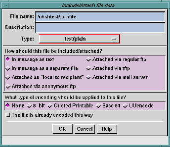
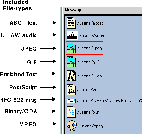
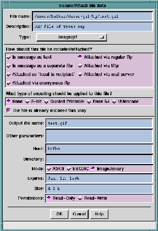

When you select
Files(s) from the
Include/Attach -> menu the
Include/Attach File dialog is opened. This is very similar to the
Select
Folders menu available through the
Open ... option in the Main
window
Folder pull-down menu. (See
Using the File Selection
Window for information on using this type of dialog window.)
You can enter the path name of one or more files, separated by a
Return after each name. Or, click the
Show list button to see an
expanded dialog that lists files in the current directory and
subdirectories of the current directory. You can then select a file
by clicking on a name in the list.
TIP:
You may use variable names known to your
login shell in the path name. You may also use
wildcard characters, which will be expanded
by your login shell.
After you have selected a file path name the
Include/Attach file data
dialog is opened.

The
Include/Attach file data dialog lets you specify how the data is to
be included or attached, how it is to be encoded, and how it is
described. This dialog will be shown once for each file you named
in the
Include/Attach File dialog. The items to be specified include:
- File name
- This is the name you entered in the previous dialog. If
you made a typing mistake in the path name, you have
the opportunity to correct it here.
- Description
- Here you can enter a line of descriptive information to be
used as the label on the icon that will be displayed in the
text at the point where the file is included. If you don't
enter a description, the path name is used as the label.
NOTE:
If you include a file in-line the
Description
information is not used.
- Type
- This is an option menu that presents all the possible data
types for an external file. The default choice in the menu
will reflect
Ishmail's best guess as to the data type. You
can override the default by clicking the option menu
button and selecting from the list.
The icon displayed in the message text will vary
according to the data type.
Icons Representing Included
Files
shows examples of
icons that represent included
GIF, JPEG, binary, PostScript, MPEG, and U-LAW audio
files in a Composition window.
NOTE:
The option menu is built from a file containing
a list of MIME data types and file name
suffixes associated with them. A default file is
supplied with
Ishmail, called
mime.types. It is
located in the
lib subdirectory at the location
where the product is installed. When you add
entries to the
mime.types file, corresponding
choices are automatically added to the option
menu. If you wish to override entries in the
default file, you can use the
$MIMETYPES
environment variable to point to an alternate
file.
- How should this file be included/attached?
- The radio buttons labelled
How should this file be
included/attached? are used to select how to add the external
file. Choices are:
- In Message as text
- Use this option to cause the contents of the
external file to be copied into your message at
the point where the cursor is located, as if you
had typed in the data. When you do this
Ishmail
does not create a separate message body part.
The recipient of the message will be unable to
detect that the data was included from a file.
This option is intended as a shortcut to save you
typing time. It is not recommended for including
non-ASCII data.
- In Message as a separate file
- Use this option to cause the contents of the file
to be copied into your message as a separate
body part, at the point where the cursor is
located. The body part will be identified by an
icon, examples of which are shown in
Icons
Representing Included Files.
When the recipient of the message clicks on the
icon, the appropriate viewer program will be
launched (if available) to show the data
contained in the file, as specified in the
Mailcap
File Definition.
- Attached as "local to the recipient"
- This is the first of the attach options, each of
which place a pointer to the external file into the
message. To the recipient, the icon looks the
same as an included file. Clicking the icon
causes the appropriate viewer program to be
launched.
The
local attachment option can be used when all
the recipients are in the same local network,
and can access common files from a server.
When you click the
Attached as "local to the recipient"
button the
Include/Attach file data dialog expands to
include
extra parameter fields.
Expanded Include/Attach File Data shows an
example of an
Include/Attach file data dialog with
expanded parameters. The section entitled
Extra parameters for attached files describes
the additional parameters.
NOTE:
The recipient of the message must be able to
access the attached file.
- Attached via anonymous FTP
- This attach option is most frequently used when
the recipients of a message are not in the same
local network as the sender. It requires that the
sender's network support an FTP server that
can be accessed by people outside the local
network.
The sender must first place the external file in a
directory which is made visible to the outside
world by the FTP server. Then, the file is
attached to the message by providing both the
path name and the network name (or IP
address) of the FTP server.
This option is known as
anonymous FTP since the
recipients do not need a login account on the
FTP server. Instead, they log in using the name
anonymous, and give their e-mail address as the
password. (Most MIME mail programs do this
automatically.)
When the recipient clicks on the file icon in the
message, the file is retrieved from the FTP
server and then it is displayed. Depending on
the speed of the FTP link, this may take a long
time. An animated icon is displayed during the
retrieval, so the recipient is aware that it is in
progress.
NOTE:
You may need to coordinate with your system
administrator to get files copied into
directories used by the FTP server. For
security reasons, some organizations restrict
access to this service.
When you click the
Attached via anonymous FTP
button the
Include/Attach file data dialog expands to
include
extra parameter fields.
Expanded Include/Attach File Data shows an
example of an
Include/Attach file data dialog with
expanded parameters. The section entitled
Extra parameters for attached files describes
the additional parameters.
- Attached via regular FTP
- This option is essentially the same as
anonymous
FTP described above, except that the recipients
need to have a login account on the FTP server.
When the recipient clicks the icon and
connection is made with the FTP server, the
server will prompt the recipient for a login
account name and password.
This option is more secure than the
anonymous
FTP option, but requires more effort to set up.
- Attached via TFTP
- This option also is essentially the same as
anonymous FTP described above, except that it
uses the TFTP program rather than the FTP
program. Because of network security problems
associated with TFTP many organizations do
not support use of this program, so you may find
this option unusable.
- Attached via mail server
- This option is considered the most secure way to
allow people external to your network to
retrieve files, though it is the most complicated
to set up and has the slowest performance.
A
mail server is a program which accepts e-mail
messages formatted a certain way. It recognizes,
among other things, requests to retrieve a file
with a specific path name. It responds to the
e-mail message by sending a reply message
containing the requested file.
When the recipient clicks on the file icon
Ishmail
mails a request to the appropriate mail server.
The requested file will eventually arrive as a
new mail message.
The sender must coordinate with the local
system administrator to make the file available
to the mail server.
- What type of encoding should be applied to this file?
- This set of radio buttons lets you specify how, if at all, the
file data should be encoded when transferred over the
network. The recipient's mail tool uses this information
to know how to automatically decode the file.
Electronic mail systems were originally designed to
handle 7-bit ASCII characters, i.e. the U.S. English
character set. All modern mail systems can now handle
8-bit ASCII, thus can use various ISO character sets for
non-English alphabets. However, messages you send
may pass through many different mail systems on the
way to their destination, and there is no guarantee that
some intermediate mail system may not be able to
handle other than 7-bit ASCII. The result may be that
your message is garbled in transmission. To guard
against this, you can encode your message so that it will
pass safely through any mail system even if it contains
binary (non-ASCII) data.
There are five choices for encoding.
- None
- The data is not encoded. It is implied that your
data contains only 7-bit ASCII characters.
- 8-bit
- The data is marked as containing 8-bit ASCII
data, but not otherwise encoded. This is really
just a warning. It may cause intermediate mail
systems, and the destination mail reader, to
treat you message differently. You should mark
your data this way if you know it contains 8-bit
characters.
- Quoted Printable
- Your message is converted to a form that uses
only 7-bit ASCII. For example, 8-bit ASCII
characters are changed to an equal sign followed
by two hexadecimal digits, which represent the
8-bit character code. This encoding method
leaves the message mostly human-readable.
However, this method doesn't work very well
with non-ASCII data, mainly because the
encoded message may be 2 to 3 times the size of
the original.
- Base 64
- This encoding should be used for binary data.
Like
Quoted Printable, all characters are encoded so
they appear as 7-bit ASCII characters. Unlike
Quoted printable encoding, this method works well
with any binary (ASCII or non-ASCII) data.
This is the encoding method is used, for
example, for file types such as
Audio,
GIF, and
JPEG. The encoded message will be about one
third larger than the original.
Base 64 encoding is a "next generation" of
uuencode. It was developed to address the
shortcomings in
uuencode, mainly the lack of
standardization of the algorithm.
- uuencode
- This encoding is also used for binary data. It has
been in use for years and is popular. However, it
is not included in the MIME specification due to
lack of standardization of the algorithm, which
may lead to a recipient being unable to correctly
decode a uuencoded message.
Ishmail supports
uuencode to increase backward compatibility
with other mail tools.
- The file is already encoded this way
- Toggle this option
On if the file you are including or
attaching has already been encoded. Otherwise
Ishmail
will encode the file automatically.

If you are attaching an
external file, the
Include/Attach file data dialog
expands to present extra parameters, depending on the
attachment type. Certain parameters are displayed in the
expanded
Include/Attach file data dialog only when file to be included
or attached is of a certain type. For example, the parameters
Application type and
Application padding only appear when you select
the file type
application/octet-stream. The figure below shows an
example of the expanded
Include/Attach file data dialog.

The optional parameters are:
- Output file name
- This is default path name of the file which will be created
on the recipient's system when the attached file is
retrieved from the sender's system. It is not necessarily
the same as the original file name. The recipient may
also override this name at the time the file is retrieved.
- Application type
- This parameter is specified only for files of type
application/octet-stream. You can specify additional type
information that identifies the format of the data.
- Application padding
- This parameter is specified only for files of type
application/octet-stream. If your system hardware has a
byte size other than 8-bits, or a word size that is not a
multiple of 8-bits, you specify the number of bits required
for padding here.
- Character Set
- This parameter is required only for ASCII text files
included in a message as a separate body part. You can
specify which ASCII character set to use when displaying
the data.
An option menu button to the right of the field shows a
list of possible character set names to choose from, or
type the name in the field.
If the data is included in-line, this implies using the same
character set as the message body.
- Other parameters
- The MIME specification is evolving. Other parameters
are proposed for file attachments. This field lets you add
other parameters that may be defined after this version
of
Ishmail was released.
- Expires
- This is a date after which the original file may be deleted
or changed. A recipient attempting to retrieve the file
after this date may receive an error or stale data.
- Size
- This is the size of the original file. Specifying this
parameter gives the recipient a hint about how long the
retrieval will take and how much space is needed to hold
the retrieved file.
- Permission
- The file can be marked as either
Read Only or
Read/Write. A
Read Only file will not be changed before the
Expiration Date.
A
Read/Write file may be changed at any time. Therefore,
this parameter is a hint to the recipient that the file need
be retrieved only once (Read Only) or should be retrieved
each time the recipient looks at the data (Read/Write).
- Host
- This parameter is shown only for FTP or TFTP
attachments. It lets you specify the name of the FTP or
TFTP server. It can be a host name, such as
ftp.ishmail.com, or an IP address, such as
206.196.74.36.
- Directory
- This parameter is shown only for FTP or TFTP
attachments. It lets you specify the directory which
contains the file to be retrieved. This parameter works in
conjunction with the
File name field. For example, if the
path name of the file is
/ftp/public/data.file, you could
specify the
File name as
data.file and the
Directory as
/ftp/public. Or, you could leave the
Directory blank and
specify the
File name as
/ftp/public/data.file.
- Mode
- This parameter is shown only for FTP or TFTP
attachments. It lets you specify the transfer mode. For
FTP the choices are:
- ASCII
- EBCDIC
- Image/Binary
For TFTP the choices are:
- Server address
- This parameter is shown only for mail server
attachments. It lets you specify the e-mail address of the
mail server. For example,
majordomo@ishmail.com.
- Subject
- This parameter is shown only for mail server
attachments. It lets you specify the subject line of the
mail message to be sent to the mail server. Depending on
how your mail server is configured, it may expect a
command to be in the
Subject field, the
Body field, or both.
An example command is:
get /public/data.file.
WARNING:
The sender is responsible for understanding
how the mail server is configured and what
commands it expects. This will vary among
different organizations.
- Body
- This parameter is shown only for mail server
attachments. It lets you specify the body of the mail
message to be sent to the mail server. Depending on how
your mail server is configured, it may expect a command
to be in the
Subject field, the
Body field, or both. An
example command is:
get /public/data.file.
WARNING:
The sender is responsible for understanding
how the mail server is configured and what
commands it expects. This will vary among
different organizations.
Use the
Message ... option to copy a message from the active mail
folder (the one shown in the
Folder Contents area of the Main
window) into the message you are composing. The file will be
shown as an icon in the message text. The recipient will be able
to view the included message or save it to a file (or mail folder).
TIPS:
- You can also use "drag and drop" to include a
message from the active folder. Click on the
message in the
Folder Contents area, drag it to
the Composition window, and drop it.
- You can edit the included message. Double
click on the icon to open an edit window. Or,
press and hold the right button and a menu
will pop up offering the option to edit the
message, edit its attributes, or delete it from
the Composition window.
Use the
Signature -> option to copy the
.signature file from your
home directory into this message.
When you click
Signature -> a cascading menu is opened offering
you the choice of four possible
.signature files. See
Signature
Preferences for information about signature files. You can have
different signatures for internal mail versus external mail. You
can also have plain text and enriched text versions of the
internal and external signatures.
Clicking this option places the contents of the
.signature file at
the cursor location.
Another way to add the contents of a
.signature file to the
composition is to click on the
Append Signature button at the bottom
of the Composition window. If you use this method, the signature
is not appended until you send the message.
NOTE:
If your
.signature file is owned by you, is
not
writable by others, and is executable it will be
treated as an executable program.
Ishmail will
run the file using your login shell, and capture
its standard output as your signature.
Preceding Section: Include/Attach Option
Following Section: Modifying or Deleting an Included File
Parent Section: Include/Attach Option
Contents of Ishmail User's Guide